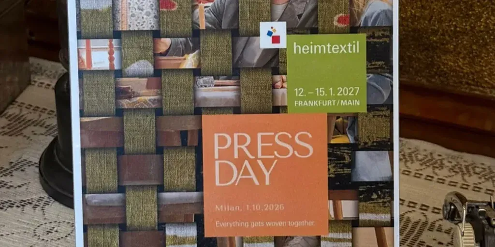

TexStyle
Heimtextil 2027 si presenta a Milano: un incontro tra tessile, design e sostenibilità
Palazzo Touring Club by Radisson Hotel, in Corso Italia, ha ospitato il press lunch dedicato alla presentazione di Heimtextil 2027, la fiera internazionale di riferimento per il tessile…